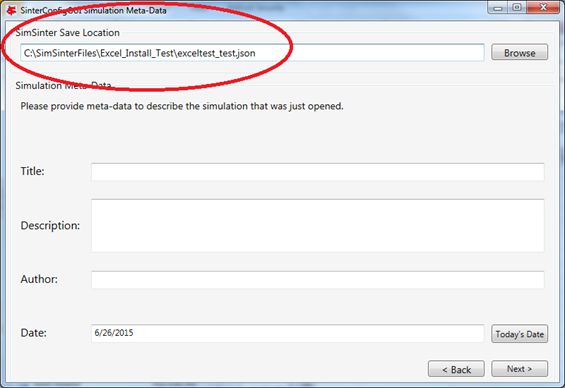
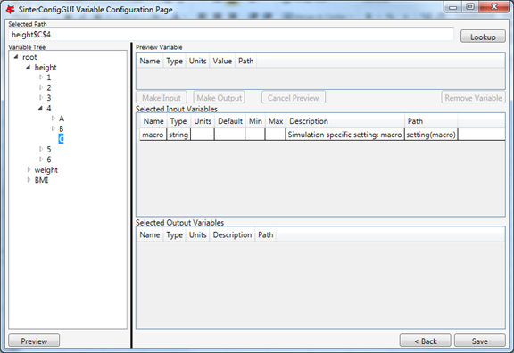
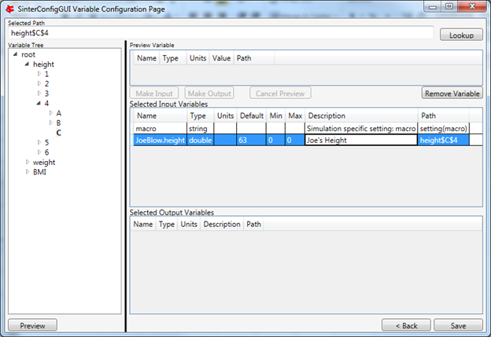
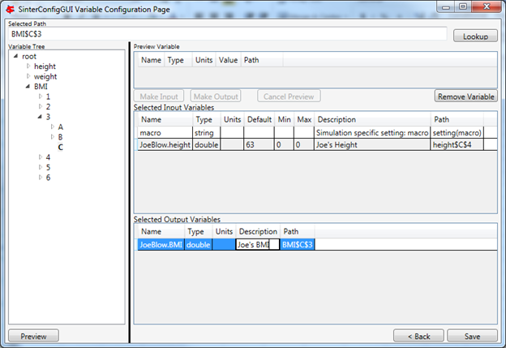

Microsoft Excel Configuration¶
The “SinterConfigGUI” can be launched from FOQUS, via the Create/Edit button found in File\(\rightarrow\) Add/Update Model to Turbine or “SinterConfigGUI” may be run on its own by selecting CCSI Tools \(\rightarrow\) FOQUS \(\rightarrow\) SinterConfigGUI from the Start menu.
The splash window displays, as shown in Figure [fig.sinter.acm.splash]. The user may click the splash screen to proceed, or wait 10 seconds for it to close automatically.

SinterConfigGUI Splash Screen
The SinterConfigGUI Open Simulation window displays (Figure [fig.sinter.acm.openpage]). If “SinterConfigGUI” was opened from FOQUS, the filename text box already contains the correct file. To proceed immediately click Open File and Configure Variables or click Browse to search for the file. For this tutorial, a fresh copy of the BMI test is opened. It can be found at:
C:SimSinterFiles\ Excel_Install_Testexceltest.xlsm.

SinterConfigGUI Open Simulation Screen
Microsoft Excel starts in the background. This is so the user can observe things about the worksheet while working on the configuration file.
In the “SinterConfigGUI” the SinterConfigGUI Simulation Meta-Data page is now displayed (Figure [fig.sinter.excel.savename]). The first and most important piece of metadata is Save Location at the top of the window. This is where the sinter configuration file is saved. The system attempts to locate a reasonable file location and file name; however, the user must confirm the correct file location, since it automatically overwrites whatever filename currently exists.
SinterConfigGUI Simulation Meta-Data Save Text Box
Continue to complete in the remaining fields and click Next.
In the SinterConfigGUI Variable Configuration Page, (Figure [fig.sinter.excel.variableempty]) notice that the Excel setting variable macro is already included in the Selected Input Variables. If the Excel spreadsheet has a macro that should be run after SimSinter sets the inputs, but before SimSinter gets the outputs, enter the macros name in the Name text box. If the default is left blank, no macro is run (unless a name is supplied in the input variables when running the simulation).

SinterConfigGUI Variable Configuration Page before Input
The Excel simulation has the same Variable Tree structure as Aspen Plus, as shown in (Figure [fig.sinter.excel.variableselected]). Only the variables in the active section of the Excel spreadsheet appear in the Variable Tree. If, for some reason, a cell does not appear the in tree, the user may manually enter the cell into the Selected Path text box. In this case, select the “height$C$4” variable.
Note: Row is first in the Variable Tree, yet column is first in the Path.
SinterConfigGUI Variable Configuration Page Selecting a Variable from the Excel Variable Tree
If the user double-clicks, presses enter, clicks Preview, or clicks Lookup, the variable will be displayed in the Preview Variable frame. Click the Make Input button to make the variable an input variable. Now the variable is in the Selected Input Variables section, and its meta-data may be edited (Figure [fig.sinter.excel.variableinputs]).
SinterConfigGUI Variable Configuration Page Description “Joe’s Height”
Enter an output variable (such as, “BMI$C$3”), by selecting the variables in the Variable Tree, clicking Preview, and then clicking Make Output (Figure [fig.sinter.excel.variableoutput]).
SinterConfigGUI Variable Configuration Page Selecting Excel Output Variables
The simulation is now set up. To save the configuration file, click Finish or press CTRL+S. The file is saved to the location that was set on the SinterConfigGUI Simulation Meta-Data window. A user can save a copy under a different name, by navigating back to the SinterConfigGUI Simulation Meta-Data window using Back, and then changing the name. This creates a second version of the file.